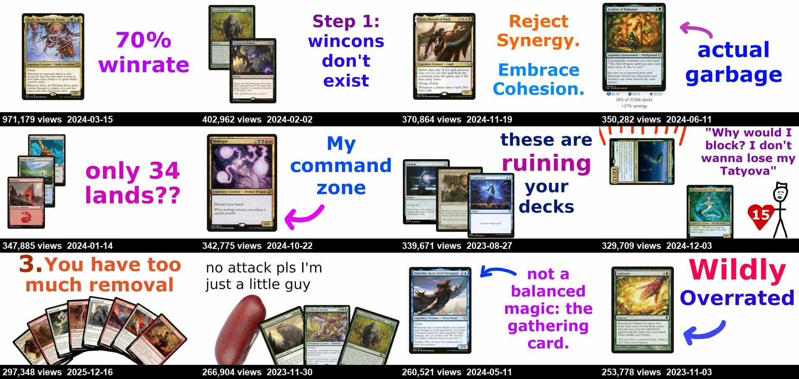
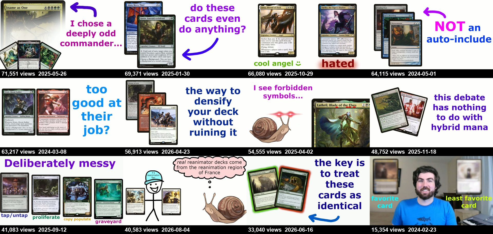
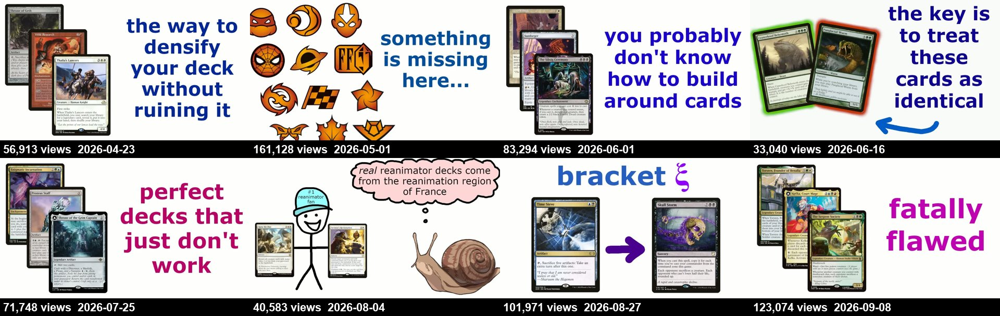
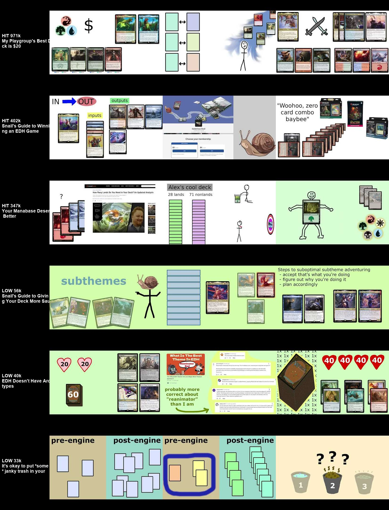

Salubrious Snail makes illustrated video essays about how to think about Commander decks, which is different from reviewing decklists. The channel had about 9,000 subscribers in January 2024 and has 99,500 now. It grew by coining ideas, explaining them with stick figures, and publishing steadily for three years. This is what worked, what is slipping, and a roadmap.
Most Commander channels show decks or gameplay. This channel explains why decks work or fail. The first video opens by calling itself "a video about data… data scraping and the sorts of feedback loops" that result. Nobody else was doing that.
"Smol Bean Syndrome", "counterweight commanders", "the hidden trap of tribal", "the problem with budget cards". A named idea gets repeated in comments and Discord, and every repeat points back to the video.
Original stick figures, the snail mascot and simple diagrams on white. Scripts run at about 205 words per minute with no filler. It's cheap to make, instantly recognisable, and carries no copyright risk.
The hooks open on real people: friends Jack and Hans arguing about pump spells, a playgroup's running joke about opening hands, the host's brother Ian. That builds loyalty without a face on camera, which explains the 3× subscriber conversion.
Four to ten long-form videos every quarter since mid-2023, with no gaps. Each one is a new way into a back catalogue that keeps pulling views.
Early videos show big lifetime numbers, but those accumulated later. In the February 2024 Q&A the host says the channel had just passed about 15k subscribers, up from 9k a month earlier. The manabase video (Jan), the guide to winning (Feb) and "My Playgroup's Best Deck is $20" (Mar, 971k, 7× the channel's usual views) came in quick succession. The channel has held a high floor ever since.
| Date | Views | Format | Title |
|---|
Every format does well by most channels' standards, and the spread between the best and worst is only about 2.7×. The practical guides ("Snail's Guide to…", "Your Manabase Deserves Better") lead. Next come deck stories with a hard constraint ($20, $100, "my most difficult deck"). Community challenges, patron deck breakdowns and videos about the channel itself trail, because they mostly serve people who already subscribe.
The median video from 2024 has 165k views. For 2025 it's 106k, and 2026 uploads sit at 87k so far. Part of that is age, because these essays keep collecting views for years. But the recent low points (41k, 33k) are lower than anything the channel posted in 2023–24 apart from the Q&A. The "multiple" (views divided by the median of the previous 10 uploads) has been below 1 for most 2026 videos.
The template never changes: a white background, one to three card scans, and bold coloured text written in the host's voice. The winners say something concrete and surprising in two to five words, such as "70% winrate", "only 34 lands??", "Step 1: wincons don't exist", "actual garbage" or "Wildly Overrated". The weakest thumbnails use full sentences ("the way to densify your deck without ruining it", "the key is to treat these cards as identical") or in-jokes that only land if you've already watched. The one thumbnail that shows the host's face is the worst performer on the channel.



Six of the last eight thumbnails carry a full sentence of three to five lines. The two that recovered (123k and 102k) went back to a short verdict ("fatally flawed") and a simple before-and-after arrow.
These frames come from 25%, 50% and 75% of the way through each video. The visual style is the same throughout: stick figures, the snail, and cards laid out on flat colour. The hits anchor the drawings in something real, like a $ sign over a budget decklist, "28 lands / 71 nonlands" as bars, or precon boxes next to a combo count. The low performers mostly show abstract coloured rectangles, buckets and screenshots of comments.

The top videos open on a story with named people or a claim you want settled. The weakest open on admin, a favour, or doubts about their own topic.
Last spring a couple friends of mine, Jack and Hans, were having a disagreement, and that disagreement was about buff spells.My Playgroup's Best Deck is $20
A now infamous sentence in my playgroup is "wow, this opening hand would be great if it had more lands".Your Manabase Deserves Better
How do you describe a Magic: the Gathering deck?The Hidden Trap of Tribal Decks
I'm working on a little project right now, and I need your help.It's okay to put *some* janky trash in your deck
The subject of hybrid mana has been pretty front and center recently… and I honestly find it a bit tiresome as a topic.The Hybrid Mana Debacle
Today I'm going to be looking at a randomly selected deck from one of my patrons.Can Gruul Control? Patron deck breakdown
Early titles promised a payoff to anyone: "Your Manabase Deserves Better", "You're Probably Playing the Wrong Ramp". Recent ones assume you already care: "EDH Doesn't Have Archetypes" (41k), "Snail's Guide to Giving Your Deck More Sauce" (57k). When the channel went back to a concrete promise in Dec 2025, "The 5 Most Common Deckbuilding Mistakes" did 297k, 3.4× the recent median.
Nine Shorts in total, in two bursts (late 2023, spring 2025). The median is 62k and the top Short did 248k. The "Is X card draw?" series is a ready-made format that could carry on indefinitely. This is the biggest reach lever the channel isn't using.
Challenges (median 70k), patron deck breakdowns (63k) and channel-meta videos (72k) are good for the community, but each one takes a slot that a practical guide (median 177k) could use to bring in new viewers.
Constraint deck stories ("$20", "$100", "most difficult") produced the channel's biggest video and two others over 180k, but only a handful have been made since 2024.
Videos of 10–15, 15–20 and 20+ minutes all have medians of 119k–124k. Only videos under 10 minutes trail (85k). Cutting length won't fix the slide, but the topics and packaging can.
There's a Patreon, a membership tier and 10 members-only videos. That's a healthy business, but gated videos don't bring in new viewers. Keep the best ideas public.
Both channels are in Magic, and both are faceless with a mascot, but they grow in opposite ways. Attack on Cardboard wins on search and news spikes. Salubrious Snail wins on loyalty and ideas people repeat to each other.
| Attack on Cardboard | Salubrious Snail | |
|---|---|---|
| Lane | Rules answers and rules news | Deckbuilding theory essays |
| Subscribers per 100 views | 0.26 | 0.74 |
| Top-10 share of long-form views | 57% | 32% |
| Median long-form views | 16.7k | 115k |
| Shorts share of views | 67% | 6% |
| Typical length / pace | 5–10 min, ~155 wpm | 12–20 min, ~205 wpm |
| Growth driver | Timing on rule changes and drama | Named concepts and steady cadence |
| Biggest weakness | Output collapsed; streams wasted time | Topics turning inward; Shorts abandoned |
The overlap is the opportunity: use search-driven practical topics ("players get X wrong", "your manabase is wrong"), give them essay depth and a recurring cast, and run a Shorts engine.
This plan assumes a new channel that wants to use the Snail engine: be the person who explains why things work in a game, not just what to play. Each phase ends with a gate, a condition to hit before moving on.
Gate: a one-line lane statement, 10 named concepts with working titles, and a finished visual kit.
Gate: 8 essays and 8 Shorts published, with at least two essays at 2× your median. Study what those two have in common.
Gate: subscribers gained per 1,000 views above 5 (Snail averages about 7.4), and a steady 3 essays + 4 Shorts a month.
Gate: 12 straight months without a quarter below 4 uploads, and a median that holds or rises quarter on quarter.
View, like and comment counts are lifetime totals scraped with yt-dlp on 24 Sep 2026. Ten members-only videos couldn't be read, so every figure covers public uploads only. Formats were assigned by keyword rules on titles (see analysis/), so a few borderline videos could sit in a neighbouring bucket. Captions are YouTube auto-captions, and hook quotes are lightly cleaned. There was no access to CTR, retention, traffic sources or subscriber history. The only subscriber checkpoint is the host's own mention of about 15k in the Feb 2024 Q&A.